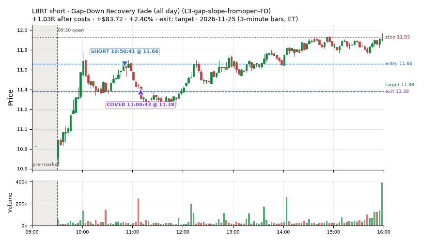
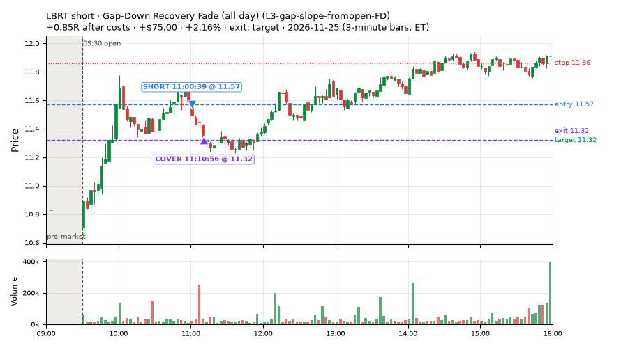
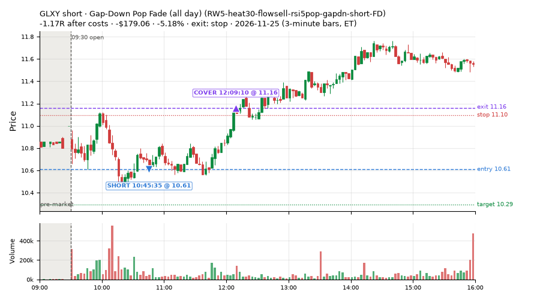
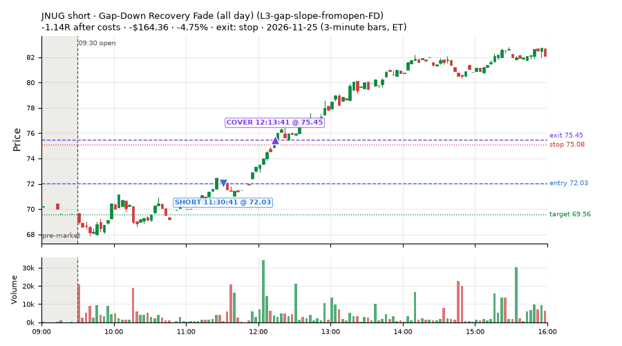
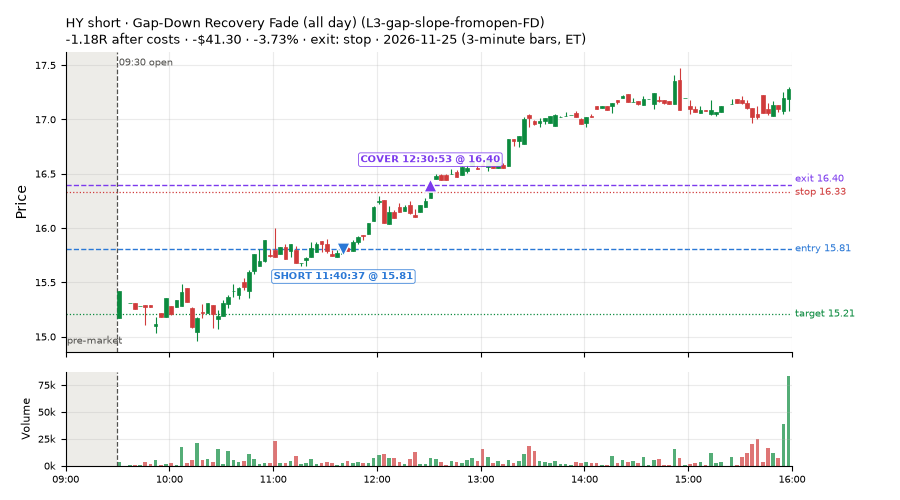
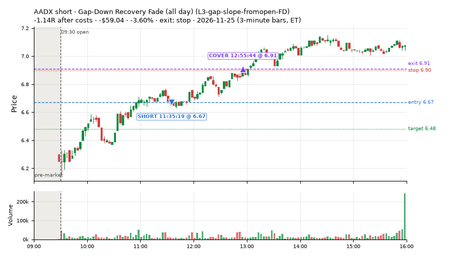
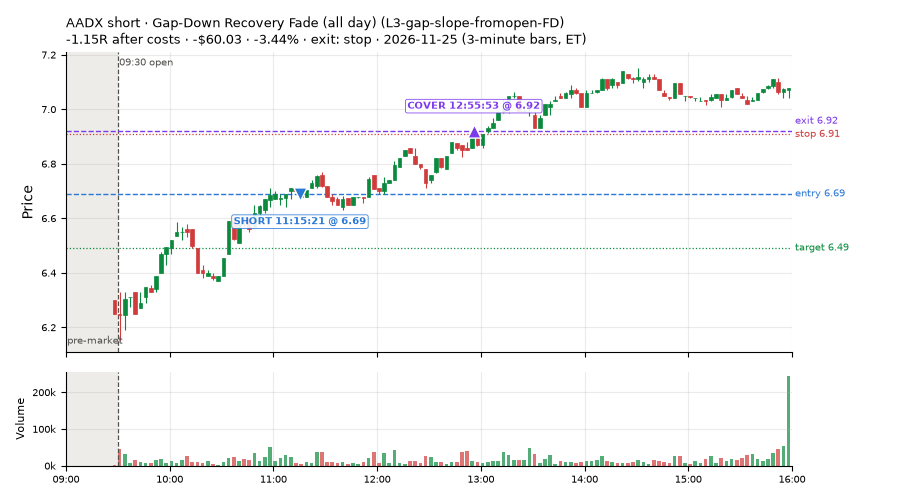

41 trades · win rate 5% · P/L $-2,853.75
PROBATION: no live setup has passed both locked test periods. 10 owner-directed setups added 2026-10-08 (MarcoFlow top 5 + 5 new), untested live. RW6G1 (RW6 + VWAP band guard) added 2026-10-09, probation.

| Symbol | Setup | Side | In | Out | Entry | Exit | Exit reason | % gained | P/L |
|---|---|---|---|---|---|---|---|---|---|
| LBRT | Gap-Down Recovery Fade (all day) (L3-gap-slope-fromopen-FD) | short | 10:50 | 11:09 | 11.66 | 11.38 | target | +2.40% | $83.72 |
| LBRT | Gap-Down Recovery Fade (all day) (L3-gap-slope-fromopen-FD) | short | 11:00 | 11:10 | 11.57 | 11.32 | target | +2.16% | $75.00 |
| Symbol | Setup | Side | In | Out | Entry | Exit | Exit reason | % lost | P/L |
|---|---|---|---|---|---|---|---|---|---|
| GLXY | RW5-heat30-flowsell-rsi5pop-gapdn-short-FD | short | 10:45 | 12:09 | 10.61 | 11.16 | stop | -5.18% | $-179.06 |
| JNUG | L3-gap-slope-fromopen-FD | short | 11:30 | 12:13 | 72.03 | 75.45 | stop | -4.75% | $-164.36 |
| HY | L3-gap-slope-fromopen-FD | short | 11:40 | 12:30 | 15.81 | 16.40 | stop | -3.73% | $-41.30 |
| AADX | L3-gap-slope-fromopen-FD | short | 11:35 | 12:55 | 6.67 | 6.91 | stop | -3.60% | $-59.04 |
| AADX | L3-gap-slope-fromopen-FD | short | 11:15 | 12:55 | 6.69 | 6.92 | stop | -3.44% | $-60.03 |







Signal to fill: median 1s, 90th percentile 3s (41 trades). Bars close each minute; the order follows the bar close.
Best excursion (MFE): median 0.27R; worst (MAE) median 1.05R. 44% of trades never got +0.25R in our favour; 1 reached +1R and still closed at or below 0.
| Symbol | Setup | Best R | Worst R | Closed R |
|---|---|---|---|---|
| LBRT | L3-gap-slope-fromopen-FD | +1.54 | -1.04 | -1.20 |
| EGO | L3-gap-slope-fromopen-FD | +0.98 | -1.25 | -1.19 |
| RUN | L3-gap-slope-fromopen-FD | +0.99 | -1.12 | -1.15 |
| AADX | L3-gap-slope-fromopen-FD | +0.65 | -1.04 | -1.15 |
| IBX | L3-gap-slope-fromopen-FD | +0.56 | -1.03 | -1.17 |
| Entry time | Trades | Win | Avg R | P/L |
|---|---|---|---|---|
| 09:50-10:30 | 1 | 0% | -1.12 | $-91.50 |
| 10:30-11:30 | 22 | 9% | -0.96 | $-1,298.87 |
| 11:30-13:00 | 18 | 0% | -1.12 | $-1,463.38 |
| Setup | Trades | Win | Avg R after costs | Adj R (net of SPY) | Avg R ex-market (all sessions) | P/L |
|---|---|---|---|---|---|---|
| Gap-Down Recovery Fade (all day) (L3-gap-slope-fromopen-FD) | 35.0 | 6% | -1.00 | -0.50 | -0.07 (beta -0.68, n 231) | $-2,465.61 |
| Gap-Down Pop Fade, Heavy Selling (all day) (RW3-gapdn-rsi5pop-flowsell-short-FD) | 5.0 | 0% | -1.23 | -0.08 | -0.06 (beta -0.85, n 199) | $-209.08 |
| Gap-Down Pop Fade (all day) (RW5-heat30-flowsell-rsi5pop-gapdn-short-FD) | 1.0 | 0% | -1.17 | -0.92 | -0.06 (beta -0.60, n 202) | $-179.06 |
Market direction (SPY, beta 1) accounted for $-1,513.84 of today's $-2,853.75; the rest ($-1,339.91) came from the setups themselves. Avg R net of SPY: -0.45 (incl. a hedge leg's cost; report only).
4 setups live today. Today: 5683 signals, 41 taken, 3 lost because another setup held the symbol (0%). Since 2026-10-06 (37 sessions): 11782 signals, 1518 taken, 208 lost to other setups (2%). Peak open positions today 33 of 77 slots. Earnings blackout removed 118 symbols before scanning.
Simulated playing time (not live): 10235 what-if trades of signals not taken, avg -0.17R, 44% winners; of them 208 lost to another setup (avg -0.12R).
Silent: intraday_momentum · Crowded out: MF4-h40-open-flowsell, MF3-open-flowsell-rsi5hi, MF5-flowsell-vwapup-rsi5hi · Starved: MF2-open-rsimidhi-flowsell
| Prio | Setup | Today sig / taken | Sessions | Signals / taken / trades | Taken/day | Expected/day | Lost to other setups | Lost to (setup n) | Top skip reasons | SIMULATED: not-taken n / avg R / win | Verdict |
|---|---|---|---|---|---|---|---|---|---|---|---|
| 1 | Late-Day ETF Dip Buy (near-miss) NM-ETF-late-dip-di-long | 3 / 0 | 11 | 45 / 35 / 35 | 3.18 | – | 0 | – | daily loss cap 8, spread / quote / size 2 | 10 / +0.17R / 70% | ok 15.9 entries/week |
| 2 | Gap-Down Pop Fade (all day) RW5-heat30-flowsell-rsi5pop-gapdn-short-FD | 12 / 1 | 29 | 308 / 202 / 202 | 6.97 | 12.79 | 0 | – | spread / quote / size 50, daily loss cap 32, not shortable / shorts off 23 | 106 / -0.12R / 44% | ok 34.8 entries/week |
| 3 | Gap-Down Pop Fade, Heavy Selling (all day) RW3-gapdn-rsi5pop-flowsell-short-FD | 14 / 5 | 29 | 355 / 199 / 199 | 6.86 | 13.59 | 1 | CWT14-failbrk-pdl-p10-lowvol-long 1 | spread / quote / size 64, daily loss cap 50, not shortable / shorts off 41 | 156 / +0.13R / 58% | ok 34.3 entries/week |
| 4 | Gap-Down Recovery Fade (all day) L3-gap-slope-fromopen-FD | 5654 / 35 | 21 | 9094 / 231 / 231 | 11.00 | – | 69 | L3-gap-slope-fromopen-FD 69, L3-gap-slope-rsi5hi-FD 14 | daily loss cap 5628, not shortable / shorts off 2257, per-setup cap 684 | 8854 / -0.19R / 42% | ok 55.0 entries/week |
Every trade is attached as a CSV you can open and edit in Excel or Google Sheets. Live page: https://misiti15.github.io/MCF/live/